WeGo Humanoid Studio Pro
모션 캡처 슈트나 PICO VR 헤드셋으로 G1의 온몸을 움직이고, 그 시연을 기록해 정책을 학습시키고, 학습된 정책으로 로봇을 다시 움직이는 과정을 한 프로그램에서 다룹니다.
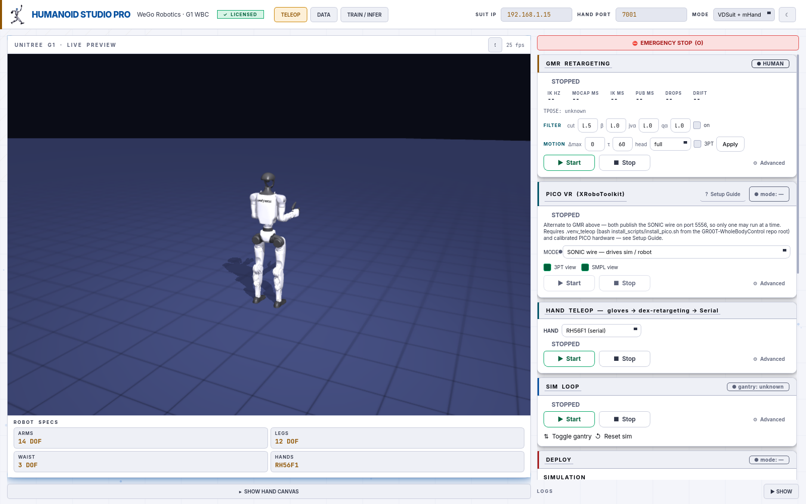
이 설명서에 대하여
| 대상 | WeGo Humanoid Studio Pro를 설치하고 운용하는 작업자 (Unitree G1 29자유도, 선택 사항으로 Inspire 다관절 손) |
| 근거 문서 | Studio Pro 프로그램의 화면과 동작 · 함께 납품되는 INSTALL.md · CUSTOMER_GUIDE.md · TROUBLESHOOTING.md · LICENSE_TERMS.md |
| 소프트웨어 | WeGo Humanoid Studio Pro, 2026년 11월 16일 빌드 기준. 실행 중인 빌드 번호는 설치 폴더의 VERSION 파일에 있습니다. SONIC 전신 제어기(Deploy)는 별도로 설치합니다 (4장) |
| 함께 보는 책 | Unitree G1 운용 설명서 — 로봇 자체의 운용 · 안전 · 네트워크 WeGo Humanoid Studio 사용 가이드 — 팔 · 손 원격조작 제품 (Studio Pro와 다른 제품) Inspire RH56F1 운용 설명서 · Inspire RH56DFX 운용 설명서 — 다관절 손 Mocap Suit 운용 설명서 — 모션 캡처 슈트의 착용 · 캘리브레이션 · VDMocap Studio 설정 |
| 판 | 한국어판 · 2026.11.24 |
| 문의 | go.support@wego-robotics.com |
Studio Pro의 화면 글자는 영어입니다. 이 가이드는 버튼과 항목 이름을 화면 그대로 Start처럼 적고, 뜻을 한국어로 풀었습니다. 함께 납품되는 문서와 프로그램의 실제 동작이 다른 곳은 참고 상자에 둘 다 적었습니다.
실제 로봇을 움직이기 전에 2장 중요 안전 수칙을 읽으십시오. 모든 세션은 시뮬레이터에서 먼저 실행합니다.
© WeGo Robotics. 화면 그림은 Studio Pro를 로봇과 입력 장치 없이 실행해 캡처한 실제 화면입니다 (로봇 미연결 상태).
목차
제품 소개 · 시스템 구성
WeGo Humanoid Studio Pro(이하 Studio Pro)는 Unitree G1을 위한 전신 원격조작 · 데이터 수집 · 모방학습 통합 프로그램입니다. 작업자가 Mocap Suit 모션 캡처 슈트나 PICO VR 헤드셋을 착용하고 움직이면 G1이 다리 · 허리 · 팔, 선택 사항으로 다관절 손까지 온몸으로 그 동작을 따라 합니다.
요약
- 전신 원격조작 — G1(29개 관절)을 모션 캡처 슈트, 또는 컨트롤러와 발목 모션 트래커를 갖춘 PICO 4 헤드셋으로 조작합니다 (8장 · 9장).
- 다관절 손 — Inspire RH56F1 또는 RH56DFX 손을 데이터 장갑으로 몸과 동시에 조작합니다.
- 플래너 보행 — SONIC 내장 플래너로 걷습니다. 키보드나 PICO 컨트롤러 스틱으로 방향을 정하며, 보행에는 슈트가 필요 없습니다 (10장).
- 데이터 수집 — 로봇 관절의 위치 · 속도 · 토크, IMU, 카메라 영상을 작업자의 명령값과 함께 기록합니다 (11장).
- 학습과 정책 실행 — 기록을 LeRobot 데이터셋으로 변환해 ACT · Diffusion · SmolVLA 정책을 학습시키고, 학습된 정책이 작업자와 같은 안전 절차를 거쳐 로봇을 움직이게 합니다 (12장).
WeGo Humanoid Studio 사용 가이드가 다루는 Humanoid Studio는 휴머노이드의 팔과 다관절 손을 원격조작하는 제품입니다. Studio Pro는 G1의 온몸을 SONIC 전신 제어기로 움직이는 별도 제품이며, 설치 파일 · 화면 · 라이선스가 따로 있습니다. 두 제품의 설명을 섞어 읽지 마십시오.
시스템 구성
| 부분 | 하는 일 | 화면 |
|---|---|---|
| 입력 장치 | 모션 캡처 슈트(장갑 별도 또는 슈트 일체형) 또는 PICO VR 헤드셋. 상단의 MODE로 고릅니다 | 상단 바 |
| 리타겟팅 | 슈트의 동작을 G1 관절 목표값으로 바꿉니다 (GMR). PICO는 자체 스트리머가 같은 일을 합니다 | GMR RETARGETING · PICO VR |
| 전신 제어기 | SONIC — 관절 목표값을 받아 균형을 잡으며 로봇을 움직입니다. 시뮬레이션용과 실제 로봇용이 따로 있습니다 | DEPLOY · SIM LOOP |
| 손 | 데이터 장갑의 손가락 동작을 다관절 손으로 보냅니다 | HAND TELEOP |
| 데이터 | 로봇 상태, 카메라 영상, 명령값을 에피소드로 기록하고 다시 재생합니다 | DATA 페이지 |
| 학습 | 기록을 데이터셋으로 바꾸고 정책을 학습 · 평가 · 실행합니다 | TRAIN / INFER 페이지 |
시뮬레이터와 실제 로봇
Studio Pro는 시뮬레이터와 실제 로봇에 같은 스트림을 보냅니다. DEPLOY 카드의
SIMULATION과 REAL ROBOT은 같은 제어기를 같은 명령으로 실행하며, 마지막의
sim / real만 다릅니다. 이 차이가 제어기가 쓰는 네트워크 인터페이스와 실제 로봇 전용 안전 점검을 정합니다. 그래서 새 작업자, 새 설정, 새 정책은 언제나 시뮬레이터에서 먼저 연습할 수 있습니다.
실제 로봇 전용 안전 점검(2장) 때문에, 시뮬레이터에서 문제없던 급격한 움직임이 실제 로봇에서는 제어기를 멈추게 할 수 있습니다.
중요 안전 수칙
Studio Pro는 실제 휴머노이드의 온몸을 움직입니다. 로봇은 작업자를 따라 빠르게 걷고 돌 수 있습니다. 로봇 하드웨어를 안전하게 운용할 책임은 운용자에게 있으며, 로봇 제조사의 안전 지침도 함께 따라야 합니다 (Unitree G1 운용 설명서).
DEPLOY 카드의 REAL ROBOT Start는 확인 창 없이 즉시 실제 로봇에서 제어기를 실행합니다. ] Control을 누르는 순간부터 로봇이 명령을 받습니다. 같은 세션을 항상 SIMULATION에서 먼저 실행하십시오.
매 세션 확인 사항
- 시뮬레이션 먼저. 새 작업자, 새 설정, 새 정책은 모두 실제 로봇 전에 SIMULATION에서 실행하십시오.
- 갠트리(보호 거치대) 먼저. 세션의 첫 실제 로봇 실행은 로봇을 갠트리에 걸고, 발이 바닥에 살짝 닿는 상태에서 하십시오.
- 주변 비우기. 사람이 로봇의 동작 범위에 들어오지 않게 하십시오. 로봇은 빠르게 걷고 돌 수 있습니다.
- 정지 버튼 곁에 한 사람. 작업자가 아닌 다른 사람이 O 키 또는 EMERGENCY STOP 버튼을 바로 누를 수 있는 위치에서 로봇을 지켜보십시오.
- 작동 전 자세 맞추기. 로봇이 작업자의 몸을 따라 하는 모든 모드(Teleop, PICO의 POSE · VR_3PT, Hand back to streamed)로 들어가기 전에 몸을 로봇의 현재 자세에 맞추십시오. 자세가 다르면 로봇이 갑자기 크게 움직입니다.
- 배지 확인. 배터리(BATT), 모터 온도(TEMP), 슈트 드리프트(DRIFT)를 보고, 모터 고장 메시지가 나오면 중지하십시오 (아래).
- 재생과 정책도 같은 주의. ▶ Robot 재생(11장)과 INFERENCE(12장)는 실제 작업자와 똑같이 로봇을 움직입니다. 비상 정지 수단을 손 닿는 곳에 두십시오.
비상 정지
| 방법 | 위치 · 조건 |
|---|---|
| EMERGENCY STOP (O) 버튼 | TELEOP 페이지 카드 열 맨 위, 항상 보입니다 |
| O 키 | Studio Pro 창 안 어디서나. 텍스트 입력란에 커서가 있어도 동작합니다 |
| O E-Stop | CONTROLS 카드의 SONIC 줄. 어떤 모드에서도 비활성화되지 않습니다 |
| 컨트롤러 A+B+X+Y | PICO 사용 시, 첫 입력(작동) 이후의 입력. PICO 스트리머가 종료되므로 PICO 카드를 다시 시작해야 합니다 |
버튼과 O 키는 실행 중인 SONIC 제어기(DEPLOY)에 정지 명령을 보냅니다.
제어기가 스스로 멈추는 경우
실제 로봇용 제어기는 다음 경우 스스로 멈춥니다: 관절 속도가 35 rad/s를 넘을 때(25 rad/s부터 경고), 로봇 상태 스트림(LowState)이 끊길 때, 모터가 과열될 때. 이 점검은 실제 로봇에서만 동작하므로, 시뮬레이터에서 문제없던 급격한 움직임이 실제 로봇을 멈추게 할 수 있습니다.
제어기의 안전 정지는 한 번 걸리면 풀리지 않습니다. 시뮬레이터의 Reset sim은 로봇을 처음 자세로 되돌릴 뿐 제어기의 정지 상태는 지우지 않습니다. 넘어지거나 정지한 뒤 제어가 되지 않으면 DEPLOY를 멈추고 다시 시작하십시오.
Deploy Real 로그에 [ErrorMonitor] … motor(s) still faulted가 반복되면 세션을 중지하십시오.
제어기는 모터 고장 때 경고음만 내고 멈추지 않습니다. 정책을 작동시키지 말고 로봇을 재시작하십시오. 재시작 직후에도 고장이 다시
나타나면 로그와 함께 지원팀에 문의하십시오.
요구 사항과 납품 내용
Studio Pro는 필요한 실행 환경을 담은 패키지 하나로 납품됩니다. conda나 pip를 따로 설치할 필요가
없습니다. 단, WeGo가 재배포하지 않는 두 가지 — NVIDIA GPU 구성요소(CUDA 등, 약 3.0 GB)와 학습 · 손 추적 기능이 쓰는 사전 학습 가중치(약 146 MB) — 는 설치 프로그램이 공식 배포처에서 고정된 버전으로 내려받고 sha256으로 확인합니다. 그래서 설치할 때 인터넷 연결이 필요합니다. 인터넷이 없는 PC에서는 두 가지를 폴더로 준비해 ./install.sh --nvidia-wheels <폴더> --models-dir <폴더> 로 설치합니다 (필요한 파일 목록은 패키지의 gpu_wheels.tsv · model_weights.tsv). GPU가 없으면 --cpu-only, 가중치를 나중에 받으려면 --skip-models를 붙입니다 (TELEOP · DATA · 변환은 동작하고, 가중치가 없는 기능만 꺼집니다). 빠진 부분은 나중에 bin/wego-install-downloads 로 추가하며, bin/wego-install-downloads --check 로 설치 상태를 볼 수 있습니다. SONIC 전신 제어기만은 GPU에 맞춰 대상 PC에서 따로 빌드합니다 (4장).
납품 파일
wego-studio-pro-<버전>-install.run 파일 하나, 또는 압축 파일 wego-studio-pro-<버전>.tar.gz와
체크섬 파일 .sha256을 받으셨을 것입니다. 둘은 내용이 같으며, .run 파일은 압축 파일을 감싼 것일 뿐입니다.
같은 위치에 공개 구성 요소의 소스 아카이브 wego-studio-pro-<버전>-sources.tar(LGPL 등 카피레프트 구성 요소의
소스와 빌드 레시피)와 릴리스 노트 wego-studio-pro-<버전>-RELEASE_NOTES.md(각 파일의 sha256 포함)가 함께 제공됩니다.
이 가이드는 Studio Pro 0.1.4 기준입니다.
작업자 PC
| 항목 | 요구 사항 |
|---|---|
| 운영체제 | Ubuntu 22.04 LTS, x86_64, 데스크톱 세션 (화면이 필요합니다) |
| 디스크 | 패키지 설치 약 9 GB (설치할 때 11 GB 여유 필요) + GPU 구성요소 약 5 GB + 사전 학습 가중치 약 0.15 GB (모두 설치하면 약 14 GB), 그리고 기록 데이터용 공간 |
| GPU | NVIDIA GPU 권장. ACT · Diffusion · SmolVLA 학습은 8 GB 노트북 GPU에서 확인했습니다 (SmolVLA는 배치 크기 8에서 최대 3.2 GB 사용). SONIC 제어기(Deploy)는 별도의 GPU 빌드가 필요합니다. GPU 구성요소(CUDA · cuDNN 등)는 설치 중에 NVIDIA · PyTorch 공식 배포처에서 NVIDIA 라이선스로 내려받습니다 |
| 인터넷 | 설치할 때 필요합니다. GPU 구성요소 약 3.0 GB와 사전 학습 가중치 약 146 MB를 내려받습니다. 인터넷이 없는 PC는 폴더에서 설치합니다 (--nvidia-wheels · --models-dir). 설치한 뒤의 학습 · 실행은 내려받아 둔 파일만 쓰므로 인터넷이 필요 없습니다 |
| 3D 미리보기 | 로컬 GPU 접근. 원격 데스크톱이나 GPU가 연결되지 않은 가상 머신에서는 미리보기가 표시되지 않을 수 있습니다 |
| 네트워크 | 로봇 연결용 유선 포트, 그리고 모션 캡처 PC · PICO 헤드셋과 통신할 네트워크 |
장비
| 장비 | 용도 |
|---|---|
| Unitree G1 (29자유도) | 실제 로봇 조작. 그 밖의 기능은 로봇 없이 시뮬레이터에서 동작합니다 |
| Mocap Suit 모션 캡처 슈트 + 모션 캡처 PC, mHand Pro 장갑(선택) | 슈트 원격조작 (8장). 착용과 캘리브레이션은 Mocap Suit 운용 설명서를 따릅니다 |
| PICO 4 또는 PICO 4 Pro 헤드셋, 컨트롤러 2개, PICO 모션 트래커 2개(발목) | VR 원격조작 (9장) |
| Inspire RH56F1 또는 RH56DFX 손 | 손 원격조작 (선택). RH56F1 · RH56DFX 운용 설명서 참조 |
| 카메라 | 작업자 PC에 연결한 Intel RealSense 또는 USB(UVC) 카메라, 또는 로봇 헤드 카메라. 학습 데이터 기록용 (11장) |
| 갠트리(보호 거치대) | 모든 실제 로봇 세션의 첫 실행 (2장) |
설치 폴더 구성
| 항목 | 설명 |
|---|---|
| bin/ | 실행 명령. wego-gui는 Studio Pro를 열고, wego-license는 라이선스를 다룹니다 |
| env-gmr/ · env-dex/ · env-lerobot/ | 포함된 Python 실행 환경 3개 (프로그램 · 손 · 학습) |
| assets/ | 로봇 · 손 모델, 글꼴, 이미지, 슈트 제조사 SDK (모션 캡처 데이터 수신) |
| INSTALL.md · CUSTOMER_GUIDE.md · TROUBLESHOOTING.md | 설치 · 조작 · 문제 해결의 영문 텍스트판 |
| LICENSE_TERMS.md · VERSION | 사용권 계약, 그리고 빌드 번호 (지원 요청 때 함께 알려 주십시오) |
| udev/ · wego-studio-pro.desktop | RH56F1 손용 USB 규칙과 바탕화면 실행 아이콘 (선택, 4장) |
함께 쓰는 공개 구성 요소와 라이선스
Studio Pro는 다음 공개 구성 요소를 사용합니다. 각 구성 요소는 자체 라이선스를 따르며, 아래는 모두 상업적 사용을 허용합니다. 제한이 있는 것은 함께 적었습니다.
| 구성 요소 | 쓰는 곳 | 라이선스 · 제한 |
|---|---|---|
| GMR (General Motion Retargeting) | 슈트 동작 → G1 관절 리타겟팅 | MIT |
| SONIC (NVIDIA) | 전신 제어기 (Deploy) · PICO 스트리머 | 소스 Apache 2.0, 모델 가중치 NVIDIA Open Model License (상업적 사용 허용, NVIDIA Trustworthy AI 조건 준수) |
| MuJoCo | 시뮬레이터 · 3D 미리보기 | Apache 2.0 |
| dex-retargeting | 장갑 → 손가락 리타겟팅 | MIT |
| XRoboToolkit | PICO 헤드셋 앱 · PC 서비스 | MIT · Apache 2.0. 헤드셋 앱은 PICO Integration SDK에 의존하며, 그 SDK는 자체 라이선스를 따릅니다 |
| LeRobot | 데이터셋 변환 · ACT · Diffusion 학습과 실행 | Apache 2.0 |
| SmolVLA · SmolVLM2 | 비전-언어-행동 정책 | Apache 2.0. Studio Pro는 처음부터 학습하며, 설치 프로그램이 SmolVLM2 설정 · 토크나이저 파일을 내려받습니다 |
| ResNet18 (torchvision) | ACT 영상 인코더의 초기 가중치 | BSD 3-Clause (ImageNet으로 학습한 가중치). 설치할 때 내려받음 |
| MediaPipe Hand Landmarker | HAND 웹캠 손 추적 모델 | Apache 2.0. 설치할 때 내려받음 |
| DINOv3 (Meta) | Advanced ACT의 영상 인코더 가중치 | 설치할 때 내려받음 (패키지에 포함되지 않음). DINOv3 License. 상업적 사용 가능. 군사 · 무기 등 금지 용도와 수출 통제 조건이 있고, 배포할 때 "Built with DINOv3" 표시가 필요합니다 |
| pi0 | 대형 비전-언어-행동 정책 | 사전 학습 가중치는 Gemma Terms of Use (상업적 사용 허용, 금지 용도 정책 준수). 패키지 · 설치 프로그램에 포함되지 않으며 고객이 직접 내려받습니다 |
| FFmpeg (LGPL 빌드) | 녹화 영상 인코딩 · 학습 데이터 디코딩 | LGPL 3.0 이상. GPL 부분(x264 · x265) 없음. 소스는 sources.tar |
| Qt 6 · PySide6 | Studio Pro 화면 | LGPL 3.0. 소스는 sources.tar |
| NVIDIA CUDA · cuDNN 등 | GPU 학습 · 추론 | 설치할 때 공식 배포처에서 내려받음, NVIDIA 라이선스 (WeGo는 배포하지 않음) |
설치 폴더의 licenses/에는 모든 공개 구성 요소의 라이선스 원문, 구성 요소 목록(THIRD_PARTY.tsv),
카피레프트 구성 요소별 소스 파일 · sha256 · 출처(SOURCES.tsv)와 NOTICE가 들어 있습니다. 소스 자체는 설치
파일과 함께 제공되는 sources.tar에 있습니다. 사용권 계약(LICENSE_TERMS.md) 2조의 제한은 이 공개 구성 요소들의
라이선스가 주는 권리를 줄이지 않습니다. 특히 LGPL 구성 요소는 수정 · 교체할 수 있고, 그 수정을 디버깅하는 데 필요한 만큼
리버스 엔지니어링할 수 있습니다.
SONIC은 NVIDIA의 GR00T-WholeBodyControl 프로젝트에서 공개된 전신 제어기입니다. Humanoid Studio 사용 가이드에서 연구용(비상업)으로 표시한 GR00T N1.5 정책과는 다른 것입니다. Studio Pro의 정책 목록에는 GR00T가 없습니다.
설치와 라이선스 활성화
패키지를 원하는 폴더에 풀고 설치 프로그램을 한 번 실행합니다. 설치 프로그램은 사용권 계약 동의, 실행 환경 배치, 점검, 라이선스 확인까지 순서대로 처리합니다.
설치본은 압축을 푼 폴더에 묶입니다. 나중에 옮기려면 새 위치에 다시 압축을 풀고 install.sh를 다시 실행하십시오.
설치
방법 A — .run 파일:
chmod +x wego-studio-pro-*-install.run ./wego-studio-pro-*-install.run # ./wego-studio-pro 에 설치 ./wego-studio-pro-*-install.run /opt/wego-studio-pro # 폴더를 지정할 때
방법 B — 압축 파일:
sha256sum -c wego-studio-pro-*.tar.gz.sha256 # 내려받은 파일이 온전한지 확인 tar xzf wego-studio-pro-*.tar.gz cd wego-studio-pro ./install.sh
어느 방법이든 사용권 계약(LICENSE_TERMS.md)이 한 번 표시됩니다. 읽은 뒤 ACCEPT를 입력하십시오.
화면 없이 스크립트로 설치할 때는 계약을 직접 읽은 뒤 --accept-eula를 붙이거나 WEGO_EULA_ACCEPT=1을
설정합니다 (--accept-eula는 NVIDIA와 각 모델의 라이선스 동의도 함께 합니다). 이어서 설치 프로그램은 다음을 합니다.
- 포함된 실행 환경 3개를 이 폴더로 재배치합니다.
- 로봇 · 손 모델 파일을 이 설치 위치에 연결합니다.
- 모든 실행 환경을 점검하고, 모든 로봇 · 손 모델을 불러와 봅니다.
- GPU 구성요소와 사전 학습 가중치를 내려받아 설치합니다 (
bin/wego-install-downloads, 3장). 각각의 라이선스를 먼저 보여 주고, 고정된 버전과 sha256이 맞는 파일만 받아들입니다. 이 단계가 실패해도 설치는 계속되고, 필요한 기능만 꺼진 채로 남습니다 (13장). - 라이선스를 확인하고, 활성화되지 않았으면 무엇을 보내야 하는지 알려 줍니다 (아래).
다시 실행해도 안전하며, 새 패키지로 그 자리에서 업그레이드할 수도 있습니다. 라이선스와 기록 데이터는 설치 폴더 밖에 있으므로 그대로 남습니다 (11장).
선택 설치 (관리자 권한 필요)
RH56F1 손을 로봇이 아닌 작업자 PC에 USB로 연결해 구동할 때는 USB 규칙을 설치하십시오.
sudo cp udev/99-rh56f1.rules /etc/udev/rules.d/ sudo udevadm control --reload-rules && sudo udevadm trigger
함께 들어 있는 규칙은 특정 USB 변환기의 일련번호에 맞춰져 있습니다. 변환기가 다르면 아래 명령으로 일련번호를 읽어 규칙 파일을 고치십시오.
udevadm info -q property -n /dev/ttyUSB0 | grep ID_SERIAL_SHORT
바탕화면 실행 아이콘이 필요하면 다음을 실행합니다.
cp wego-studio-pro.desktop ~/.local/share/applications/
SONIC 제어기 (Deploy) 설치
DEPLOY 카드는 작업자 PC의 GPU에서 SONIC 전신 제어기를 실행합니다. 이 빌드는 GPU와 CUDA · TensorRT
버전에 맞춰야 하므로 패키지에 들어 있지 않고 대상 PC에서 한 번 빌드합니다. 함께 납품되는 INSTALL.md의
"Deploy Sim/Real" 항목을 따르거나 WeGo 지원팀과 함께 설치하십시오. PICO 헤드셋용 실행 환경도 이때 함께 설치합니다 (9장).
INSTALL.md에는 TELEOP · DATA · TRAIN / INFER가 SONIC 설치 없이 모두 동작한다고 적혀 있습니다. 현재 빌드에서
SIM LOOP, DEPLOY, LOCOMOTION, PICO VR,
ROBOT LINK는 SONIC 설치에 들어 있는 실행 환경을 씁니다. SONIC 없이 쓸 수 있는 것은 GMR 미리보기,
HAND TELEOP, CAMERAS, 기록의 ▶ Viewer 재생, 데이터셋 변환과 학습입니다.
로봇 상태가 들어간 기록과 INFERENCE에는 ROBOT LINK가 필요합니다.
라이선스 활성화
라이선스는 컴퓨터 한 대에 묶입니다. 이 컴퓨터용 라이선스가 미리 들어 있지 않으면 설치 프로그램이 Machine ID(컴퓨터 ID)를 보여 주고 요청 파일을 만듭니다.
This computer is not licensed yet.
Machine ID: XXXX-XXXX-XXXX
Written: ~/wego_credentials.txt
- 요청 파일
~/wego_credentials.txt를 go.support@wego-robotics.com으로 보내십시오. - 라이선스 파일을 받으면 활성화합니다:
bin/wego-license --activate <파일> - 또는
bin/wego-gui를 실행하십시오. 라이선스가 없으면 활성화 창이 뜹니다. Copy Machine ID, Save request file…, Activate…, Quit 버튼으로 같은 일을 합니다. 활성화되면 프로그램이 이어서 열리고, 상단에 LICENSED 배지가 보입니다.
| 명령 | 기능 |
|---|---|
bin/wego-license --id | 이 컴퓨터의 ID 출력 |
bin/wego-license --request | 요청 파일 다시 만들기 (기본 ~/wego_credentials.txt) |
bin/wego-license --activate <파일> | 받은 라이선스 파일 설치 |
bin/wego-license --status | 활성화 상태 확인 |
bin/wego-license --terms | 사용권 계약 다시 출력 |
라이선스는 하드웨어 식별자 하나가 아니라 여러 개를 대조하므로, 네트워크 카드 교체나 OS 재설치만으로는 잠기지 않습니다. 완전히 다른 컴퓨터에는 새 라이선스가 필요합니다. 라이선스 활성화는 컴퓨터 식별 파일을 한 번 주고받는 오프라인 절차이며, Studio Pro는 기록 데이터나 사용 정보를 외부로 보내지 않습니다.
설치 프로그램과 이 가이드는 요청 파일을 go.support@wego-robotics.com으로 보내도록 안내합니다. 현재 빌드의 활성화 창과
wego-license 명령은 다른 WeGo 주소를 표시합니다. 이 가이드는 설치 프로그램의 안내를 따랐습니다.
로봇 · 슈트 · 헤드셋 · 카메라 연결
작업자 PC는 유선으로 로봇 네트워크에, 그리고 네트워크로 모션 캡처 PC나 PICO 헤드셋에 연결합니다. 연결에 쓰는 주소와 모드는 화면 상단 바에서 정합니다.
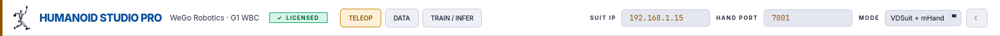
로봇
G1을 이더넷 케이블로 작업자 PC에 연결하십시오. 로봇은 로봇 네트워크(192.168.123.x)를 쓰며, 로봇의 개발 연산 유닛(PC2)은 192.168.123.164입니다. 작업자 PC의 유선 포트에는 로봇이 쓰지 않는 192.168.123.x 고정 주소를 지정하십시오. 로봇 쪽 네트워크 설정은 Unitree G1 운용 설명서를 따릅니다.
- DEPLOY → REAL ROBOT은 192.168.123.x 주소를 가진 인터페이스를 스스로 찾습니다.
찾지 못하면 다른 인터페이스로 넘어가며 로그에
Could not find 192.168.123.x interface, using: …를 남깁니다. 실제 로봇이 움직이지 않으면 이 줄을 먼저 확인하십시오. - DATA 페이지의 ROBOT LINK는 ⚙ Advanced의 IFACE로 로봇 상태를
읽습니다. 실제 로봇이면 로봇 쪽 네트워크 카드 이름(예:
enp4s0), 시뮬레이터이면lo로 정하십시오.
모션 캡처 슈트
슈트의 착용과 캘리브레이션은 Mocap Suit 운용 설명서를 따릅니다. 모션 캡처 PC(슈트 데이터를 받는 PC)의 VDMocap Studio에서
Data Share IP 칸에 그 PC 자신의 IP 주소를 넣으십시오. Studio Pro는 이 주소에서 슈트 스트림을 받으므로, 같은 주소를
상단 바의 SUIT IP에 넣습니다 (기본값 192.168.1.15). 그다음 작업자 PC에서 접속되는지 확인하십시오.
ping 192.168.1.15 # 모션 캡처 PC의 실제 주소로
MODE는 손 데이터를 어디서 받을지, 그리고 어느 입력 장치가 로봇을 구동할지 정합니다.
| MODE | 의미 |
|---|---|
| VDSuit + mHand | 몸은 슈트, 손가락과 손목은 별도 HAND PORT(기본값 7001)의 mHand Pro 장갑 |
| VDSuit Full | 장갑이 슈트에 포함 — 몸과 손가락이 하나의 슈트 스트림으로 들어옵니다 |
| PICO VR | 슈트 대신 PICO 헤드셋이 로봇을 구동합니다. GMR RETARGETING 카드가 비활성화됩니다 (9장) |
MODE는 마우스 클릭으로만 바뀌며, 휠을 굴려서는 바뀌지 않습니다. 실행 중인 카드는 모드를 바꿔도 비활성화되지 않으므로 언제든 멈출 수 있습니다.
PICO 헤드셋
헤드셋과 작업자 PC는 같은 고속 Wi-Fi 네트워크에 있어야 합니다. 앱 설치, 발목 트래커 페어링, 헤드셋 연결 방법은 PICO VR 카드의 ? Setup Guide에 있습니다 (9장).
카메라
- 작업자 PC의 카메라(This PC): 설정이 필요 없습니다.
- 로봇의 카메라(Robot): Studio Pro가 SSH로 로봇에 카메라 서버를 올려 실행합니다. 비밀번호 없는
SSH를 한 번 설정하십시오. 로봇의 계정은 Unitree 공장 기본값
unitree/123입니다.ssh-copy-id unitree@192.168.123.164
다관절 손
- RH56F1, 작업자 PC에 USB 연결: 4장의 USB 규칙을 설치하십시오. 두 손이 USB 하나를 같이 쓰며, 포트와 손 번호 (RIGHT ID · LEFT ID)는 HAND TELEOP의 ⚙ Advanced에 있습니다.
- 로봇에 연결된 손(RH56F1의 DDS 브리지, Inspire RH56DFX): 로봇 네트워크로 명령을 보냅니다. RH56F1의 DDS 브리지 모드는 로봇에서 실행되는 브리지 프로그램을 거칩니다. ⚙ Advanced의 IFACE를 로봇 쪽 네트워크 카드로 정하십시오. 손 자체의 설치와 운용은 각 손의 운용 설명서를 따릅니다.
화면 개요와 상태 배지
bin/wego-gui(또는 바탕화면 아이콘)로 Studio Pro를 시작하면 시작 화면 뒤에 TELEOP 페이지가 열립니다.
상단의 탭 세 개 — TELEOP, DATA, TRAIN / INFER — 로 페이지를 바꿉니다.
카드의 공통 형태
각 기능은 카드 하나입니다. 모든 카드는 같은 형태를 가집니다: ▶ Start / ■ Stop 버튼, STOPPED · RUNNING 상태 표시, 그리고 처음에는 닫혀 있는 ⚙ Advanced 영역. ⚙ Advanced에는 실제 실행 명령과 포트 · 인터페이스 같은 저수준 설정이 있습니다. 평소 조작에는 필요 없고, 문제를 찾을 때 봅니다.
각 페이지 오른쪽 아래의 LOGS 패널(▶ SHOW)에는 프로세스마다 탭이 있습니다. 카드를 시작하면 그 카드의 로그 탭이 자동으로 열립니다. 무언가 시작되지 않을 때 가장 먼저 확인할 곳입니다.
미리보기는 왼쪽 드래그로 회전, 오른쪽 · 가운데 드래그로 이동, 휠로 확대합니다. 아래의 ROBOT SPECS는 팔 14 · 다리 12 · 허리 3 자유도와 선택된 손을 보여 주고, SHOW HAND CANVAS는 손가락 미리보기를 엽니다.
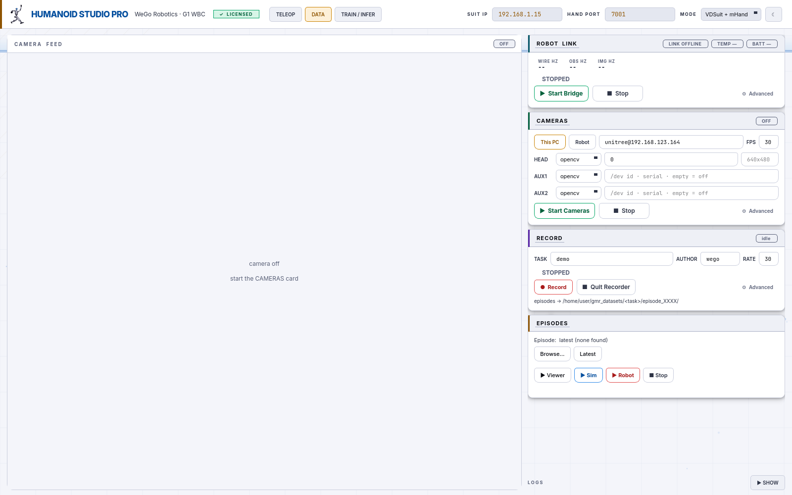
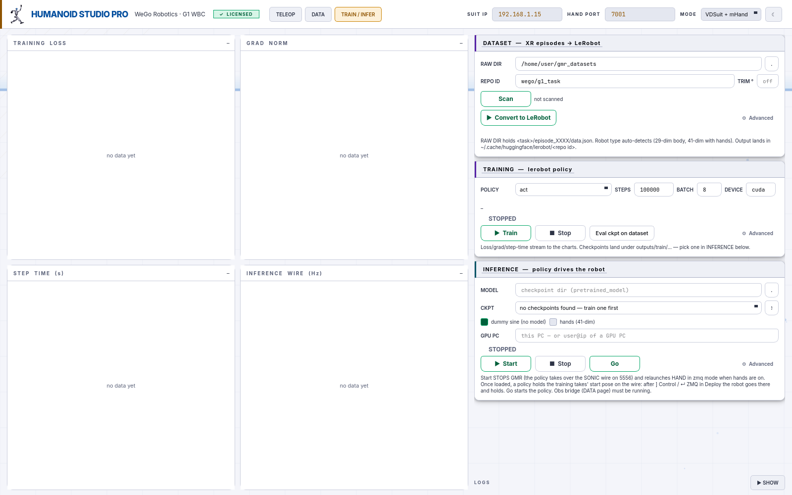
상태 배지
| 위치 | 배지 | 의미 |
|---|---|---|
| 상단 바 | LICENSED | 유효한 라이선스로 실행 중 |
| 모든 카드 | STOPPED · RUNNING | 그 카드의 프로세스가 실행 중인지 |
| GMR | HUMAN · POLICY · REPLAY | 지금 누가 로봇을 구동하는지: 작업자, 학습된 정책, 기록 재생 |
| GMR | DRIFT | 세션 중 슈트 센서의 영점이 벗어나고 있음. 주황 = 다음 쉬는 시간에 슈트를 재보정, 빨강 = 지금 재보정 |
| GMR | TPOSE: … | T-포즈 보정 상태: calibrated(저장된 값 또는 이번 세션), built-in default(아직 보정 안 함) |
| 미리보기 | MOCAP TIMEOUT | 2초 동안 슈트 데이터 없음. 데이터가 1초 동안 이어지면 MOCAP RECONNECTED로 바뀐 뒤 사라집니다 |
| PICO | mode: OFF · PLANNER · POSE … | 헤드셋의 제어 상태 (9장) |
| DEPLOY · LOCOMOTION | PLANNER · STREAMED · NORMAL | SONIC이 플래너로 걷는지, 스트림을 따르는지, 플래너 없이 시작된 기본 모드인지. PLANNER timeout → IDLE은 플래너 명령이 끊겨 제자리에 섰다는 뜻입니다 |
| SIM LOOP | gantry: ON · OFF | 가상 갠트리가 시뮬레이션 로봇을 들고 있는지 |
| ROBOT LINK | LINK OFFLINE · STALE · LIVE | 로봇 상태 스트림 |
| ROBOT LINK | TEMP | 가장 뜨거운 모터 온도. 65 °C 이상 주의, 80 °C 이상 높음 |
| ROBOT LINK | BATT | 배터리 잔량 · 전압. 30 % 미만 주황, 15 % 미만 빨강 |
| CAMERAS | OFF · STARTING… · LIVE · ERROR | 카메라 스트림. 로봇 카메라이면 LIVE (Jetson) |
| RECORD | idle · ● REC · saved | 기록 대기, 기록 중, 저장됨 |
TELEOP 페이지
TELEOP 페이지의 카드는 위에서 아래로 입력(GMR · PICO), 손, 시뮬레이터, 제어기, 보행, 조작 버튼 순서입니다. 이 장은 카드마다 무엇이 있는지 설명하고, 실제 조작 순서는 8 ~ 10장에서 다룹니다.
GMR RETARGETING
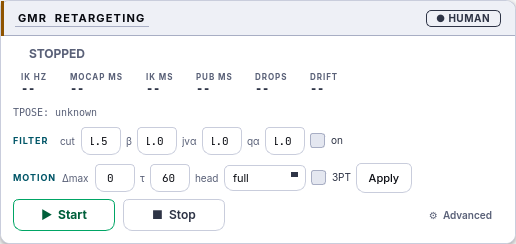
시작하면 숫자 칩이 실시간 상태를 보여 줍니다: IK HZ(리타겟팅 주기), MOCAP MS(슈트 지연), IK MS · PUB MS(계산 · 전송 시간), DROPS(버린 프레임), DRIFT(슈트 센서 드리프트). TPOSE 줄은 T-포즈 보정이 적용되었는지 보여 줍니다 (8장).
FILTER와 MOTION 줄은 평활화 · 동작 설정이며, 실행 중에 Apply를 누르면 다시 시작하지 않고 바로 반영됩니다. 필터는 기본으로 꺼져 있습니다(on 체크 해제). 기본값은 현장에서 확인한 값이므로 WeGo의 안내가 있을 때만 바꾸십시오. 제목 옆의 HUMAN 배지는 누가 로봇을 구동하는지 보여 줍니다 (6장).
PICO VR (XRoboToolkit)
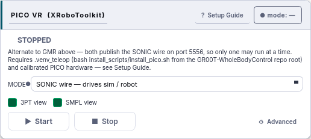
GMR과 PICO는 같은 로봇 스트림을 보내므로 한 번에 하나만 실행할 수 있습니다. 한쪽이 실행 중이면 다른 쪽은 시작을 거부합니다. 카드 안의 MODE는 두 가지입니다.
- SONIC wire — drives sim / robot: 시뮬레이터나 로봇을 구동합니다. 미리보기 창에는 제어기(Deploy)가 실행된 뒤부터 로봇이 보입니다.
- GMR canvas preview — no wire: 리타겟팅 결과를 미리보기에만 보여 주며, 로봇은 움직이지 않습니다.
3PT view는 VR 기준 자세 창을 열어, 컨트롤러로 작동하기 전에 몸을 맞출 수 있게 합니다. SMPL view는 전신 모양을 보여 주는 창이며 지연이 늘어납니다. mode: 배지는 헤드셋의 제어 상태입니다. 조작 순서는 9장을 보십시오.
HAND TELEOP
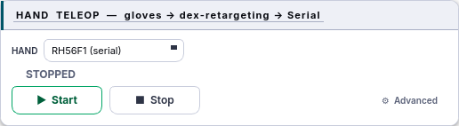
HAND에서 손 모델을 고르십시오: RH56F1 (serial)(작업자 PC에 USB 연결),
RH56F1 (DDS bridge)(로봇에 연결된 RH56F1), Inspire RH56DFX (DDS). USB 포트와 손 번호
(기본 /dev/rh56f1, 오른손 2 · 왼손 1), DDS 모드의 네트워크 인터페이스는 ⚙ Advanced에 있습니다.
손가락 데이터의 출처는 상단 MODE가 정합니다 (5장). 미리보기 아래의 SHOW HAND CANVAS로
손가락을 실시간으로 볼 수 있습니다.
SIM LOOP
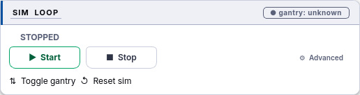
시뮬레이터의 로봇은 가상 갠트리에 매달린 채로 시작합니다. Toggle gantry는 가상 갠트리로 로봇을 들거나 내리고, Reset sim은 로봇을 처음 자세로 되돌립니다. 로봇이 넘어지면(높이 0.2 m 미만) 시뮬레이터가 스스로 초기화합니다. 제목 옆 배지가 갠트리 상태를 보여 줍니다.
Deploy가 실행되고 제어가 켜진 것을 확인한 뒤에 갠트리를 내리십시오. 그 전에 내리면 시뮬레이션 로봇이 제어 없이 떨어집니다. Reset sim은 제어기의 안전 정지 상태를 지우지 않습니다 (2장).
DEPLOY
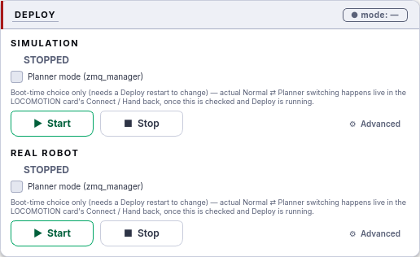
SIMULATION 줄은 SIM LOOP의 가상 로봇에, REAL ROBOT 줄은 실제 G1에 연결됩니다. Start를 누르면 제어기가 준비를 마친 뒤 대기하며, ] Control을 누를 때부터 명령을 받습니다.
Planner mode (zmq_manager)는 Start 전에 정하는 시작 설정입니다. 바꾸려면 Deploy를 멈추고 다시 시작해야 합니다. PICO와 LOCOMOTION에는 체크하고, 슈트 원격조작에는 체크하지 마십시오. 체크하면 제어기는 플래너 상태로 시작하고, 플래너와 스트림 추종 사이의 실제 전환은 LOCOMOTION 카드(10장)나 PICO 컨트롤러(9장)로 합니다. 제목 옆 배지가 현재 상태(PLANNER · STREAMED · NORMAL)를 보여 줍니다.
REAL ROBOT Start는 확인 없이 즉시 실제 로봇에서 제어기를 실행합니다. 같은 세션을 SIMULATION에서 먼저 실행하고, 로봇을 갠트리에 건 상태에서 시작하십시오 (2장).
LOCOMOTION — SONIC planner
슈트 없이 SONIC 플래너로 로봇을 걷게 하는 카드입니다. 10장에서 설명합니다.
CONTROLS
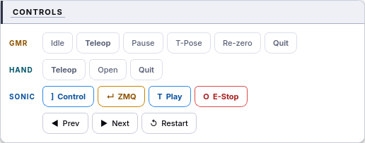
| 줄 | 버튼 |
|---|---|
| GMR | Idle, Teleop(로봇이 작업자를 따라 움직임), Pause(로봇이 마지막 자세 유지), T-Pose(보정, 8장), Re-zero(정면 방향 기준을 다시 잡음), Quit |
| HAND | Teleop, Open(손 펴기), Quit |
| SONIC | ] Control(제어 시작), ↵ ZMQ(스트림 추종 시작 · 중지), T Play, O E-Stop(비상 정지). ◀ Prev · ▶ Next · ↺ Restart는 제어기에 내장된 기준 동작을 넘깁니다 |
프로세스가 실행 중이 아닌 줄은 비활성화됩니다. SONIC 줄의 ] Control · ↵ ZMQ · T Play는 제어기가 스트림을 따르는 상태(STREAMED 또는 NORMAL)에서만 동작하며, 플래너 상태에서는 회색입니다. O E-Stop은 언제나 누를 수 있습니다.
키보드
| 키 | 동작 |
|---|---|
| O | 비상 정지. 텍스트 입력란에 커서가 있어도 동작합니다 |
| ] | ] Control과 같음 |
| Enter | ↵ ZMQ와 GMR Teleop을 함께 보냄 |
| W S A D , . Q E | 플래너 보행 조종 (10장). 미리보기를 한 번 클릭한 뒤 씁니다 |
O를 뺀 나머지 키는 텍스트 입력란에 커서가 있으면 입력란으로 들어갑니다.
모션 캡처 슈트로 조작하기
Mocap Suit 모션 캡처 슈트를 입은 작업자의 온몸 동작을 G1으로 옮깁니다. 같은 순서를 시뮬레이터에서 먼저 하고, 문제가 없으면 실제 로봇에서 반복합니다.
준비
- 슈트를 Mocap Suit 운용 설명서에 따라 착용하고 캘리브레이션하십시오.
- 상단 MODE를 VDSuit + mHand 또는 VDSuit Full로 정하고 SUIT IP가 모션 캡처 PC의 주소(VDMocap Studio의 Data Share IP)와 같은지 확인하십시오 (5장).
- 손을 쓸 때는 HAND TELEOP에서 손 모델을 고르고 Start를 누르십시오.
세션 순서
- GMR RETARGETING Start. 슈트 데이터가 들어오면 IK HZ 칩이 움직이고 MOCAP TIMEOUT 배너가 사라집니다. 미리보기 로봇이 작업자를 따라 움직입니다.
- T-포즈 (작업자마다 한 번): 발을 어깨너비로 벌리고, 팔을 옆으로 수평으로 곧게 펴고, 손바닥을 아래로 향한 채 CONTROLS GMR 줄의 T-Pose를 누르십시오. TPOSE: calibrated가 나올 때까지 움직이지 마십시오. 보정값은 저장되어 다음 실행부터 자동으로 적용됩니다.
- SIM LOOP Start, 이어서 Planner mode를 체크하지 않은 채 DEPLOY → SIMULATION Start.
- CONTROLS에서 ] Control, ↵ ZMQ, GMR Teleop을 차례로 누르십시오. 키보드로는 ] 다음 Enter입니다 (Enter는 ↵ ZMQ와 Teleop을 함께 보냅니다). 이제 시뮬레이션 로봇이 작업자를 따라 움직입니다. 시뮬레이터의 가상 갠트리는 이 뒤에 내립니다 (7장).
- 시뮬레이션이 정상이면 Deploy를 멈추고 DEPLOY → REAL ROBOT으로 3 ~ 4번을 반복하십시오 — 로봇은 갠트리에 걸고, 주변을 비운 상태에서 (2장).
함께 납품되는 CUSTOMER_GUIDE.md는 T-포즈를 약 60초 유지하라고 안내합니다. 현재 빌드는 T-Pose를
누른 뒤 60프레임(약 1 ~ 2초)을 모아 보정합니다. 어느 쪽이든 TPOSE: calibrated가 표시될 때까지 자세를
유지하면 됩니다.
GMR이 Teleop인데 로봇이 움직이지 않으면 ] Control이나 ↵ ZMQ를 건너뛴 것입니다. SONIC이 아직 스트림을 받지 않는 상태입니다.
세션 중
- Pause는 로봇을 마지막 자세로 고정합니다. 작업자가 자세를 바꾸는 동안 씁니다.
- Re-zero는 "정면" 방향의 기준을 다시 잡습니다.
- 팔이 뒤집히거나 어긋나 보이면 T-Pose로 다시 보정하십시오.
- DRIFT 칩이 주황이면 다음 쉬는 시간에, 빨강이면 바로 VDMocap Studio에서 슈트를 재보정하십시오. 재보정 방법은 Mocap Suit 운용 설명서에 있습니다. T-포즈를 다시 잡으면 드리프트 기준도 새로 시작합니다.
- 다시 따라 하게 할 때는 먼저 몸을 로봇의 현재 자세에 맞추십시오 (2장).
PICO VR 헤드셋으로 조작하기
PICO 4 헤드셋, 컨트롤러 두 개, 발목 모션 트래커 두 개로 G1의 온몸을 조작합니다. 컨트롤러 스틱으로 걷게 할 수도 있습니다. 이 모드에서는 슈트와 GMR을 쓰지 않습니다.
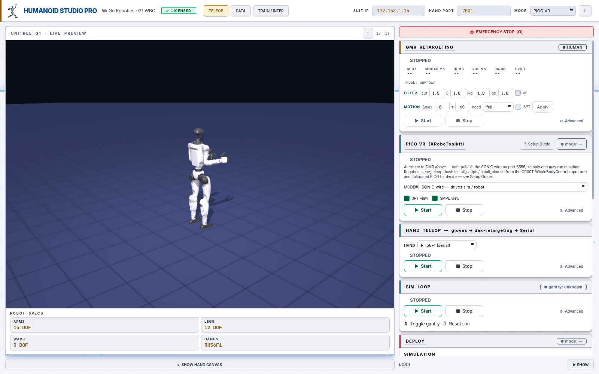
처음 한 번: 설치와 페어링
PICO VR 카드의 ? Setup Guide를 열어 따라 하십시오. 창 아래의 ▶ Play Setup Video (76s)는 공식 설치 영상을 엽니다.
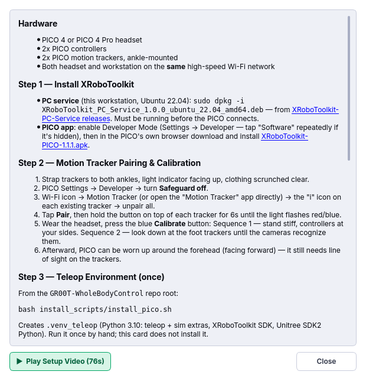
- XRoboToolkit 설치 — 작업자 PC에 XRoboToolkit PC 서비스를 설치합니다. 헤드셋이 연결되기 전에 실행 중이어야 합니다. 헤드셋에서는 개발자 모드를 켜고 XRoboToolkit 앱을 설치합니다.
- 모션 트래커 페어링 · 보정 — 트래커를 두 발목에 표시등이 위로 향하게 차고, 헤드셋 설정에서 Safeguard를 끈 뒤, 기존 트래커를 모두 해제하고 다시 페어링합니다. 헤드셋을 쓰고 보정 순서(차렷 자세, 그다음 발의 트래커 내려다보기)를 따릅니다. 이후 헤드셋을 이마 위로 올려 써도 되지만, 트래커가 카메라에 보여야 합니다.
- 원격조작 실행 환경 — SONIC 설치 때 한 번 설치합니다 (4장). 카드가 직접 설치하지는 않습니다.
- 헤드셋 연결 — 헤드셋의 XRoboToolkit 앱에서 "PC Service:" 옆에 작업자 PC의 Wi-Fi 주소를 넣고 "Status:" 옆에 WORKING이 뜨는지 확인합니다. Tracking에서 Head와 Controller를 켜고, Data/Control은 Send, Pico Motion Tracker는 Full body로 정합니다.
세션 순서
- 상단 MODE → PICO VR. GMR이 실행 중이면 멈추십시오.
- DEPLOY: Planner mode를 체크하고 Start (SIMULATION 먼저).
- PICO VR 카드: MODE는 SONIC wire, Start. 배지는 mode: OFF입니다.
- 기준 자세를 취하십시오: 똑바로 서서 발을 모으고, 위팔은 몸 옆으로 곧게 내리고, 아래팔은 앞으로 90° 굽히고(L자), 손바닥은 안쪽을 향하게 합니다.
- A+B+X+Y를 동시에 누르십시오. 정책이 작동하고 그 자리에서 보정됩니다. 배지 → PLANNER: 스틱으로 로봇을 걷게 할 수 있지만, 아직 몸은 따라 하지 않습니다.
- 몸을 로봇의 현재 자세에 맞춘 뒤 A+X를 누르십시오. 배지 → POSE, Deploy 배지 → STREAMED가 되고 CONTROLS의 SONIC 버튼이 활성화됩니다.
- ] Control, 이어서 ↵ ZMQ를 누르십시오. 이제 로봇이 작업자의 온몸을 따라 움직입니다. ↵ ZMQ를 한 번 더 누르면 따라 하기를 멈춥니다.
컨트롤러 조작
| 입력 | 동작 |
|---|---|
| A+B+X+Y | 첫 입력: 작동 + 보정. 이후 입력: 비상 정지 (PICO 스트리머 종료) |
| A+X | POSE(온몸 따라 하기)와 PLANNER(스틱 보행) 전환 |
| B+Y | POSE와 상체 고정 PLANNER 전환 |
| 왼쪽 스틱 클릭 | 플래너 모드에서: 팔이 컨트롤러를 따라감(VR_3PT). 손목을 다시 보정하므로 먼저 팔을 로봇에 맞추십시오 |
| 왼쪽 메뉴 버튼 누르고 있기 | POSE 중 일시정지, 떼면 다시 따라 함 |
| 왼쪽 스틱 · 오른쪽 스틱(좌우) | 보행 방향 · 회전 |
| 트리거 | 그쪽 손 쥐기 |
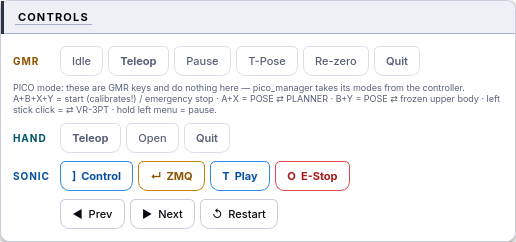
POSE나 VR_3PT로 바꾸기 전에 항상 몸을 로봇의 현재 자세에 맞추십시오. 자세가 다르면 로봇이 갑자기 크게 움직입니다. A+B+X+Y 비상 정지 뒤에는 PICO 카드가 멈추므로 다시 시작해야 합니다.
DATA 페이지의 Record는 ] Control 이후에만 누르십시오. 그 전에는 제어기가 관절 목표값을 내보내지 않아 몸의 명령값이 0으로 기록됩니다. 이 경우 RECORD 로그에 경고가 나옵니다.
미리보기만 할 때
카드의 MODE를 GMR canvas preview로 정하면 헤드셋 동작이 리타겟팅되어 미리보기에만 나타나고 로봇은 움직이지 않습니다. 헤드셋 연결은 한 프로그램만 쓸 수 있으므로, 이 모드와 SONIC wire는 동시에 쓸 수 없습니다. SONIC wire에서는 Deploy가 실행된 뒤부터 미리보기에 로봇이 나타납니다.
플래너 보행 (LOCOMOTION)
SONIC은 내장 플래너로 로봇을 스스로 걷게 할 수 있습니다. 방향은 키보드로 정하며 슈트가 필요 없습니다. 플래너 보행 중에는 팔도 플래너의 보행 동작을 따릅니다.
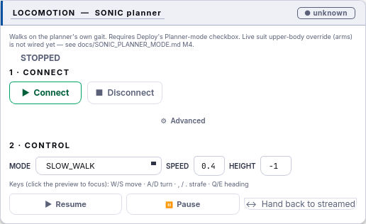
순서
- DEPLOY를 Planner mode 체크 상태로 시작하십시오 (SIMULATION 먼저). GMR은 멈춰 있어야 합니다. GMR이 실행 중이면 Connect가 거부됩니다.
- 2 · CONTROL에서 보행 MODE(기본
SLOW_WALK), SPEED, HEIGHT를 미리 정하십시오. - 1 · CONNECT의 ▶ Connect를 누르십시오. 연결과 동시에 플래너 제어가 시작됩니다.
- 3D 미리보기를 한 번 클릭해 키보드 입력을 받게 한 뒤 조종하십시오: W / S 앞 · 뒤, A / D 회전, , / . 옆걸음, Q / E 진행 방향을 30°씩 돌리기.
앞 · 뒤 이동은 확인되었지만, A / D 회전과 , / . 옆걸음의 방향은 아직 실제로 확인되지 않았습니다. 실제 로봇에 쓰기 전에 시뮬레이터에서 로봇을 보며 방향을 확인하십시오.
버튼
| 버튼 | 동작 |
|---|---|
| ▶ Connect | 제어기에 연결하고 바로 플래너 제어를 시작합니다 |
| Pause | 연결은 둔 채 플래너의 자세를 멈춥니다 |
| ▶ Resume | Pause 뒤에 제어를 다시 시작합니다. 처음에는 필요 없습니다 |
| ↔ Hand back to streamed | 제어를 스트림 추종으로 넘깁니다. 로봇은 현재 자세로 멈춰 그 자세를 유지하며(힘이 빠지지 않음), 카드의 연결이 풀립니다. 그다음 GMR을 시작하면 슈트가 로봇을 이어받습니다 |
| ■ Disconnect | 연결을 바로 끊습니다. 로봇은 플래너가 마지막으로 명령한 자세를 유지합니다 |
플래너 상태에서는 CONTROLS의 ] Control이 동작하지 않습니다. Connect와 Hand back이 같은 명령을 대신 보냅니다.
Hand back to streamed 뒤에는 GMR을 시작하기 전에 슈트 작업자가 로봇과 같은 자세를 취하게 하십시오. GMR을 시작하는 순간부터 로봇이 작업자를 따라 합니다.
보행 모드와 속도 · 높이
MODE에는 27개 모드가 네 묶음으로 있습니다: STANDING(IDLE, SLOW_WALK, WALK, RUN, FORWARD_JUMP,
STEALTH_WALK, INJURED_WALK), SQUAT / CRAWL(앉기 · 무릎 꿇기 · 엎드리기 · 기기), BOXING, STYLED WALK. 모드 목록은 마우스
클릭으로만 바뀝니다. SPEED와 HEIGHT의 -1은 모드 기본값이며, 범위를
벗어난 값은 범위 안으로 잘라 보냅니다.
| 모드 · 항목 | 정할 수 있는 범위 |
|---|---|
| SLOW_WALK | SPEED 0.2 ~ 0.8 m/s |
| RUN | SPEED 1.5 ~ 3.0 m/s |
| CRAWLING | SPEED 0.4 ~ 1.0 m/s |
| ELBOW_CRAWLING | SPEED 0.7 ~ 1.0 m/s |
| WALK_BOXING · 펀치 · 훅 | SPEED 0.7 ~ 1.5 m/s |
| 그 밖의 모드 | SPEED는 모드 기본값으로 고정 (칸이 회색) |
| HEIGHT | SQUAT / CRAWL 묶음에서만 0.2 ~ 0.8 m. 서 있는 모드는 기본값으로 고정 |
데이터 기록 (DATA 페이지)
원격조작하는 동안 로봇의 상태, 카메라 영상, 작업자의 명령값을 에피소드로 기록합니다. 기록은 다시 재생하거나 12장에서 학습 데이터셋으로 바꿉니다.
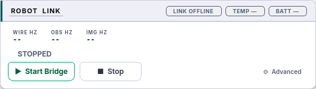
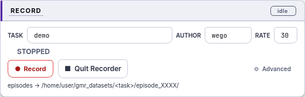
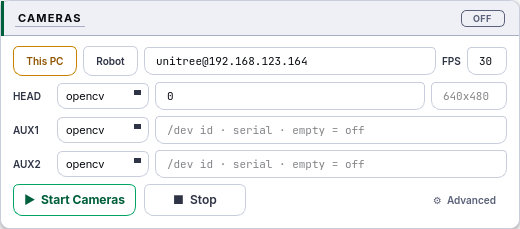
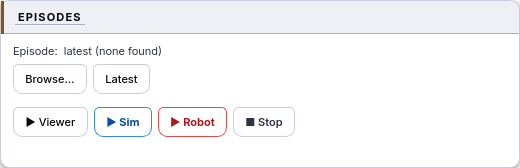
기록되는 내용
| 데이터 | 내용 |
|---|---|
| 관절 (측정값) | 29개 관절 전체의 위치 · 속도 · 토크 |
| 관절 (명령값) | 모든 관절에 보낸 목표값, 그리고 명령한 몸통 방향 |
| IMU | 몸통 자세(쿼터니언)와 각속도 |
| 손 | HAND TELEOP이 실행 중이면 손가락 명령값과 측정값 (0 ~ 1000) |
| 영상 | RGB, 카메라당 640×480 (헤드 카메라는 더 넓게 정할 수 있음, 아래), 카메라 최대 3대 (HEAD · AUX1 · AUX2) |
깊이(depth) 영상은 이번 빌드에서 기록되지 않습니다.
에피소드 기록
- ROBOT LINK ▶ Start Bridge — 로봇 상태를 기록에 넣습니다 (⚙ Advanced의
IFACE: 로봇 쪽 네트워크 카드, 시뮬레이터는
lo). 이것 없이 기록하면 관절 상태와 IMU가 오류 없이 0으로 기록됩니다. 실행 중이면 WIRE HZ · OBS HZ · IMG HZ 칩이 각 스트림의 주기를 보여 줍니다. - CAMERAS: This PC 또는 Robot을 고르고, 카메라마다 종류
(
opencv/realsense)와 장치 번호 또는 일련번호를 넣은 뒤 ▶ Start Cameras. 빈 칸은 그 카메라를 끈다는 뜻입니다. HEAD 줄 끝의 크기 칸에는 헤드 카메라만의 해상도를 넣을 수 있습니다 (Logitech C920은864x480에서 16:9 전체 폭을 보며, 640×480은 좌우가 잘립니다). 이때 다른 카메라 영상에는 좌우에 검은 여백이 붙어 모든 영상이 같은 크기를 유지합니다. - 원격조작을 시작하십시오 (8장 또는 9장).
- RECORD: TASK에 작업 이름을 넣고 — 에피소드 폴더 이름이 되며, 언어 조건 정책에는 지시문으로 쓰입니다 — ● Record를 누르십시오. 다시 누르면(■ Stop Recording) 멈추고 저장합니다. RATE는 초당 기록 횟수(기본 30), AUTHOR는 기록자 표시입니다. 기록을 마치면 ■ Quit Recorder로 기록 프로그램을 닫습니다.
카메라 없이 기록한 에피소드는 영상이 없어 학습용으로 변환할 수 없습니다 (RECORD 로그에 경고). 재생은 됩니다. 로봇 스트림이 없으면(GMR · PICO가 모두 꺼져 있으면) Record는 기록할 것이 없다며 시작하지 않습니다. PICO로 기록할 때는 9장의 주의를 따르십시오.
검토와 재생
EPISODES에서 기록을 고르고(Browse…로 에피소드의 data.json을 고르거나
Latest로 가장 최근 기록) 재생합니다.
- ▶ Viewer — 3D 뷰어 창에서 재생합니다. 다른 것은 움직이지 않습니다.
- ▶ Sim · ▶ Robot — 기록된 스트림을 시뮬레이터 또는 실제 로봇의 제어기로 다시 보냅니다. 실시간 세션과 똑같이 로봇을 움직이므로 GMR을 먼저 멈춰야 하고, ▶ Robot은 확인 창이 먼저 뜹니다.
- ■ Stop — 재생을 멈춥니다.
재생은 첫 프레임 자세를 3초 동안 유지한 뒤 시작합니다. Deploy 쪽에서 ] Control, ↵ ZMQ, T Play를 누르기 전에는 아무것도 움직이지 않습니다.
- 로봇이 균형 유지 상태에 있고, 주변이 비어 있고, 비상 정지가 손 닿는 곳에 있는지 확인하십시오.
- T Play 전에 로봇이 첫 프레임 자세에 자리 잡을 때까지 기다리십시오.
데이터 저장 위치
| 항목 | 위치 |
|---|---|
| 기록 | ~/gmr_datasets/<task>/episode_XXXX/ — data.json과 colors/*.jpg |
| 변환된 데이터셋 | ~/.cache/huggingface/lerobot/<repo id>/ |
| 학습 체크포인트 | ~/.local/share/gmr-studio/outputs/train/ |
| 평가 그래프 | ~/gmr_datasets/eval_dataset.png |
| T-포즈 보정값 | ~/.gmr_tpose.json |
| 라이선스 | ~/.wego_license |
| 사용권 동의 · 설치 기록 | ~/.local/share/gmr-studio/ |
모두 설치 폴더 밖에 있으므로 재설치나 업그레이드 뒤에도 남습니다.
학습과 정책 실행 (TRAIN / INFER)
기록을 LeRobot 데이터셋으로 바꾸고, 정책을 학습시키고, 로봇 없이 평가한 뒤, 학습된 정책이 작업자 대신 로봇을 움직이게 합니다. 카드는 위에서 아래로 이 순서입니다.
1 · DATASET
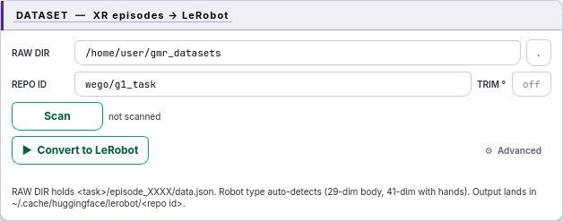
- RAW DIR에 기록 폴더(
<task>/episode_XXXX/data.json이 들어 있는 폴더, 기본~/gmr_datasets)를 지정하고, 데이터셋 이름 REPO ID(예:wego/pick_box)를 정하십시오. - Scan을 누르십시오. 에피소드 · 프레임 수를 보고하고, 한 데이터셋에 함께 넣을 수 없는 기록(카메라 수가 다르거나, 손이 있는 것과 없는 것이 섞인 경우)을 미리 알려 줍니다.
- ▶ Convert to LeRobot을 누르십시오. 몸만 있는 데이터셋(29차원)과 몸 + 손 데이터셋(41차원)은 자동으로
구분됩니다. 결과는
~/.cache/huggingface/lerobot/<repo id>에 저장됩니다.
변환된 데이터셋은 관절 위치와 카메라 영상으로 학습하며, 속도 · 토크 · IMU는 원본 기록에 그대로 남습니다. 카메라 영상이 없는 에피소드는 변환이 거부됩니다.
TRIM °(선택, 예: 3)는 각 기록의 정지된 시작 부분, 즉 어느 관절이든 그 각도만큼 움직이기 전의
프레임을 잘라냅니다. 정책은 움직임 없는 시작 구간에서 이미 얼마나 기다렸는지 알 수 없어 대기를 반복해서 계획하므로, 잘라낸
데이터로 학습하면 더 빨리 움직이기 시작합니다. 비워 두면 모든 프레임을 씁니다.
2 · TRAINING
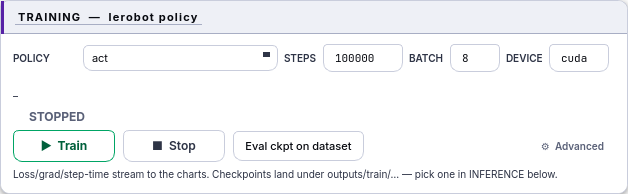
POLICY, STEPS(기본 100000), BATCH(기본 8),
DEVICE(기본 cuda)를 정하고 ▶ Train을 누르십시오. 학습할 데이터셋은 DATASET
카드의 REPO ID입니다. 왼쪽 그래프와 진행 막대가 실시간으로 갱신되고, 체크포인트는
~/.local/share/gmr-studio/outputs/train/ 아래에 저장됩니다.
| POLICY | 설명 |
|---|---|
| act | 빠르고 가볍습니다. 처음 시도하기에 좋습니다. 영상 인코더는 설치할 때 받은 ResNet18 가중치로 시작합니다 |
| act + DINOv3 (Advanced ACT) | 더 강한 영상 인코더를 쓰는 ACT로, Humanoid Studio의 권장 팔 정책입니다. 설치 프로그램이 내려받은 DINOv3 인코더 가중치를 씁니다 (체크포인트를 INFERENCE에서 불러올 때도 필요). 전신 제어에서는 아직 검증되지 않았습니다 |
| diffusion | 더 크고 동작이 부드럽습니다. 10단계 샘플러로 학습해 약 0.2초 만에 계획합니다 |
| smolvla | 비전-언어-행동(VLA) 모델로 TASK 문장도 씁니다. 설치 프로그램이 내려받은 SmolVLM2 설정 · 토크나이저로 처음부터 학습합니다 |
| pi0 | 대형 비전-언어-행동 모델. 대용량 메모리 GPU와, 포함된 학습 실행 환경에 아직 없는 추가 구성 요소가 필요합니다. 쓰기 전에 지원팀에 문의하십시오 |
로봇 없이 평가하기
Eval ckpt on dataset은 INFERENCE 카드의 CKPT에서 고른 체크포인트를, 그 체크포인트가
학습한 데이터셋의 첫 에피소드에 실행해 봅니다. 작업자의 동작과 비교한 관절별 오차를 다리 · 허리 · 팔로 나눠 로그에 보고하고,
그래프를 ~/gmr_datasets/eval_dataset.png에 저장합니다. 몸 전체 평균 오차가 2° 미만이면 looks trained로
판정합니다. 학습한 데이터에서 오차가 훨씬 크면(SUSPECT) 로봇에 쓰기 전에 데이터셋과 학습 횟수를 확인하십시오.
3 · INFERENCE — 정책이 로봇을 조작
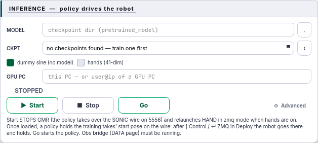
- DATA 페이지의 ROBOT LINK와, 카메라로 학습한 정책이면 CAMERAS를 시작하십시오. 정책에는 로봇 상태와 학습 때와 같은 카메라가 필요합니다.
- CKPT에서 체크포인트를 고르십시오(최근 것이 위, 오른쪽 새로 고침 버튼으로 다시 찾기). 고르면 MODEL이 채워지고 dummy sine (no model)의 체크가 풀립니다. 다른 폴더의 체크포인트는 MODEL에 직접 지정합니다. 손을 포함해 학습했다면 hands (41-dim)를 체크하십시오.
- ▶ Start를 누르십시오. GMR이 멈추고 정책이 그 자리를 대신하며, GMR 배지가 POLICY로 바뀝니다. 손을 체크했으면 HAND TELEOP이 정책 입력 모드로 다시 시작됩니다.
- 정책이 로드되면 학습 기록의 시작 자세를 스트림에 유지합니다. Deploy의 안전 절차는 그대로 적용됩니다: ] Control · ↵ ZMQ 뒤 로봇이 그 자세로 이동해 유지하므로, 기록할 때와 같게 장면을 맞출 수 있습니다. 이 PC에 학습 데이터셋이 없으면 로봇의 현재 자세를 유지합니다.
- Go를 누르면 정책이 그 자세에서 시작합니다. 실제 로봇 전에 시뮬레이터에서 실행하십시오.
dummy sine (no model)은 모델 없이 시험용 사인파 동작을 보내는 항목이며 처음에는 체크되어 있습니다.
정책은 한 번에 여러 동작(청크)을 계획합니다. 느린 정책(Advanced ACT, diffusion, smolvla)은 현재 청크가 실행되는 동안 다음 청크를 미리 계획하며, 새 청크는 곧바로 건너뛰지 않고 10단계에 걸쳐 섞여 들어갑니다. 정책 동작(초당 30회) 사이는 제어기가 요구하는 초당 50회로 부드럽게 이어집니다. 정책이 움직이는 손의 관절 속도는 4 rad/s로 제한됩니다.
INFERENCE는 실제 작업자와 똑같이 로봇을 움직입니다. 2장의 안전 수칙을 그대로 지키고, 새 정책은 언제나 시뮬레이터에서 먼저 실행하십시오.
다른 PC의 GPU로 실행하기
GPU PC(선택, user@ip)를 넣으면 학습 PC처럼 더 강한 그래픽 카드가 있는 다른 PC에서 정책을
실행합니다. 로봇 상태, 카메라, 명령 스트림이 SSH 연결 하나로 함께 오갑니다. 그 PC에는 같은 경로의 설치 폴더와 같은 경로의
체크포인트가 있어야 하고, ssh-copy-id를 한 번 해 두어야 하며, 유선으로 연결하십시오. 학습 중인 GPU에서는 실행하지
마십시오.
문제 해결
모든 카드의 ⚙ Advanced는 실제 실행 명령을, LOGS의 탭은 실행 결과를 보여 줍니다. 둘을 함께 보면 대부분의 문제를 알 수 있습니다.
설치 · 라이선스 · 실행
| 증상 | 조치 |
|---|---|
| "This computer is not licensed yet" | 처음 설치한 PC에서는 정상입니다. 4장의 활성화 절차를 따르십시오 |
| "This licence belongs to a different computer" | 라이선스가 이 PC의 하드웨어 식별자와 충분히 맞지 않습니다. 실제로 다른 PC로 옮겼다면 새 라이선스가 필요합니다. 표시된 Machine ID와 함께 문의하십시오 |
| "licence for the previous release" | 이전 버전의 라이선스 파일입니다. 다시 쓸 수 없으므로 새로 요청하십시오 |
install.sh가 중간에 멈춤 | 다시 실행하십시오. 다시 실행해도 안전하게 만들어져 있습니다. 같은 단계에서 또 멈추면 그 단계의 오류 메시지가 원인을 알려 줍니다 |
| 창이 열리지 않음 | 일반 SSH가 아닌 데스크톱 세션에서 실행하십시오 (echo $DISPLAY가 값을 출력해야 합니다) |
| 3D 미리보기가 비어 있음 | 미리보기에는 로컬 GPU 접근이 필요합니다. 원격 데스크톱이나 가상 머신에서는 다른 기능은 되어도 미리보기가 안 보일 수 있습니다 |
| "GPU components not installed on this PC" | GPU 구성요소 없이(--cpu-only 등) 설치된 PC입니다. <설치 폴더>/bin/wego-install-downloads 를 실행하거나, CPU로 학습 · 실행하려면 DEVICE를 cpu로 바꾸십시오 |
| "… disabled: its pretrained weights are not installed on this PC" | 그 기능(ACT · Advanced ACT · SmolVLA · HAND 웹캠)의 사전 학습 가중치가 설치되지 않았습니다 (--skip-models로 설치했거나 내려받기가 실패). bin/wego-install-downloads 를 실행하십시오. --check 로 무엇이 빠졌는지 볼 수 있습니다 |
| 설치 중 GPU 구성요소 · 가중치 내려받기 실패 | 네트워크 · 프록시를 확인하고 bin/wego-install-downloads 를 다시 실행하십시오 (자동으로 몇 번 다시 시도합니다). 인터넷이 없는 PC는 다른 PC에서 gpu_wheels.tsv · model_weights.tsv에 적힌 파일을 받아 폴더에 모은 뒤 --nvidia-wheels · --models-dir 로 설치하십시오. 실패해도 나머지 기능은 동작합니다 |
sha256 … != pinned … (refused) | 받은 파일이 고정된 파일과 다릅니다 (손상되었거나 배포처에서 바뀜). 그 파일은 설치되지 않습니다. 다시 실행해 새로 받거나, 올바른 파일을 폴더로 준비하십시오. 계속되면 지원팀에 문의하십시오 |
TELEOP
| 증상 | 조치 |
|---|---|
| MOCAP TIMEOUT이 계속 표시됨 | SUIT IP가 모션 캡처 PC의 주소(VDMocap Studio의 Data Share IP)와 같은지, ping이 되는지 확인하십시오. 데이터가 돌아오면 배너는 저절로 사라집니다. 사라지지 않으면 화면이 아니라 연결 자체의 문제입니다 |
| GMR은 Teleop인데 로봇이 움직이지 않음 | ] Control, 이어서 ↵ ZMQ를 누르십시오 (8장) |
| 팔이 뒤집히거나 어긋나 보임 | T-포즈를 다시 하십시오 (8장) |
| PICO: ] Control · ↵ ZMQ가 회색 | Deploy가 아직 플래너 상태입니다. A+B+X+Y 뒤에 A+X를 먼저 누르십시오 |
| PICO 카드가 갑자기 STOPPED | 첫 입력 이후의 A+B+X+Y는 비상 정지이며 스트리머를 끝냅니다. 카드를 다시 시작하십시오 |
| GMR · PICO가 시작을 거부함 | 둘 중 다른 하나가 실행 중입니다. 같은 스트림을 쓰므로 하나를 멈추십시오. INFERENCE나 재생이 실행 중일 때도 마찬가지입니다 |
| HAND TELEOP이 바로 멈춤 | ⚙ Advanced와 HAND 로그 탭을 확인하십시오. 대개 고른 손 모델에 맞지 않는 포트 · 손 번호, 또는 DDS 모드의 잘못된 네트워크 인터페이스입니다 |
| 시뮬레이션 로봇이 넘어진 뒤 제어되지 않음 | 제어기의 안전 정지가 걸린 상태입니다. Reset sim만으로는 풀리지 않으니 Deploy를 다시 시작하십시오 |
실제 로봇 (Deploy Real)
시뮬레이터에서는 되는데 실제 로봇이 움직이지 않으면 원격조작 쪽 문제가 아니라 다음 중 하나입니다. Deploy Real 로그 탭에서 확인하십시오.
| 로그 · 증상 | 원인과 조치 |
|---|---|
Could not find 192.168.123.x interface, using: … | 로봇 네트워크 케이블이 빠졌거나 작업자 PC에 192.168.123.x 주소가 없습니다. 연결과 주소를 확인하십시오 (5장) |
| 시작 뒤 넘어가지 않고 계속 대기 | 로봇의 내장 운동 서비스가 해제되기를 기다리는 중입니다. 로봇 상태는 Unitree G1 운용 설명서를 따라 확인하십시오 |
LowState is not available, waiting for robot to be ready | 로봇이 상태를 보내지 않습니다. 로봇 전원과 네트워크를 확인하십시오 |
Lost LowState data connection from robot! | 실행 중 로봇 상태가 끊겨 제어기가 멈췄습니다 (2장) |
[ErrorMonitor] … motor(s) still faulted | 모터 고장입니다. 2장의 경고를 따르십시오 |
| 카드가 이유 없이 STOPPED | Studio Pro는 시작 1초 뒤 제어기의 확인 질문에 자동으로 답합니다. 그 전에 빌드 오류로 스크립트가 끝나면 카드만 멈춥니다. 로그 탭을 읽으십시오 |
DATA · TRAIN / INFER
| 증상 | 조치 |
|---|---|
| 기록에 로봇 상태가 없음 (0으로 기록) | 기록 전에 ROBOT LINK를 시작하십시오 |
| 로봇 카메라가 시작되지 않음 | ssh-copy-id unitree@192.168.123.164를 한 번 실행하십시오. This PC 카메라에는 필요 없습니다 |
| ▶ Robot 재생을 눌렀는데 아무것도 안 됨 | 확인 창에서 취소했거나, Deploy 쪽에서 ] Control · ↵ ZMQ · T Play를 누르지 않았습니다. GMR이 실행 중이면 먼저 멈추십시오 |
| 변환 실패: 카메라 영상 없음 | 카메라 없이 기록된 에피소드입니다. CAMERAS를 켜고 다시 기록하십시오 |
| Scan이 서로 다른 에피소드를 지적함 | 작업 폴더를 하나씩 변환하십시오. 한 데이터셋은 카메라 · 손 구성이 같아야 합니다 |
| Convert · Train이 시작되지 않음 | 학습 실행 환경(env-lerobot)은 화면과 별도입니다. TRAIN 로그 탭의 메시지를 확인하십시오 |
| INFERENCE가 "start CAMERAS first"로 멈춤 | 정책에 영상이 필요합니다. DATA 페이지의 CAMERAS를 시작하십시오 |
| INFERENCE가 시작되지 않음 | INFER 로그 탭이 어떤 조건이 빠졌는지 알려 줍니다 (모델 미선택, 손 설정 등) |
| INFERENCE는 도는데 로봇이 한 자세만 유지 | 학습 시작 자세에서 Go를 기다리는 중입니다. 로그에 holding it on the wire … press Go가 보입니다 |
| Eval ckpt on dataset이 아무 일도 하지 않음 | 먼저 INFERENCE의 CKPT에서 체크포인트를 고르십시오 |
Advanced ACT: No module named 'timm' 또는 내려받기 오류 | DINOv3 가중치가 설치되지 않았습니다. bin/wego-install-downloads 를 실행하거나 act를 고르십시오 |
지원 요청
문제가 계속되면 go.support@wego-robotics.com으로 다음을 보내 주십시오.
- 컴퓨터 ID(
bin/wego-license --id)와 설치 폴더의VERSION파일 내용 - 무엇을 하다가 무슨 일이 일어났는지, 그리고 기대한 결과
- 관련 로그 탭의 내용(LOGS → ▶ SHOW)과 그 카드의 ⚙ Advanced 명령
빠른 참조
슈트 세션
- MODE: VDSuit + mHand / VDSuit Full
- GMR Start → T-Pose (작업자마다)
- SIM LOOP Start
- DEPLOY SIMULATION Start (Planner 체크 안 함)
- ] → Enter
- 정상이면 REAL ROBOT으로 반복 (갠트리)
PICO 세션
- MODE: PICO VR, GMR 정지
- DEPLOY: Planner 체크 → Start
- PICO 카드 SONIC wire Start
- 기준 자세 → A+B+X+Y (PLANNER)
- 자세 맞춤 → A+X (POSE)
- ] Control → ↵ ZMQ
비상 정지
| 화면 | EMERGENCY STOP (O) |
| 키보드 | O (어디서나) |
| CONTROLS | O E-Stop |
| PICO | A+B+X+Y (두 번째부터) |
넘어지거나 정지한 뒤에는 Deploy를 다시 시작합니다.
플래너 보행 키
| W S | 앞 · 뒤 |
| A D | 회전 |
| , . | 옆걸음 |
| Q E | 진행 방향 30° |
미리보기를 클릭한 뒤 씁니다. 회전 · 옆걸음 방향은 시뮬레이터에서 먼저 확인.
기본값
| SUIT IP | 192.168.1.15 |
| HAND PORT | 7001 |
| 로봇 PC2 | 192.168.123.164 |
| 로봇 계정 | unitree / 123 |
| RH56F1 포트 | /dev/rh56f1 |
문의: go.support@wego-robotics.com
컴퓨터 ID · VERSION 파일 · 로그 탭 내용을 함께 보내 주십시오.
파일 위치
| 기록 | ~/gmr_datasets/ |
| 데이터셋 | ~/.cache/huggingface/lerobot/ |
| 체크포인트 | ~/.local/share/gmr-studio/outputs/train/ |
| 라이선스 | ~/.wego_license |